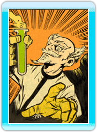
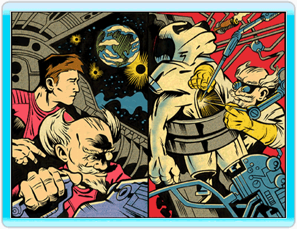
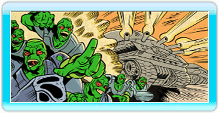
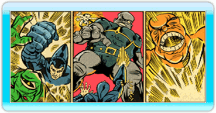
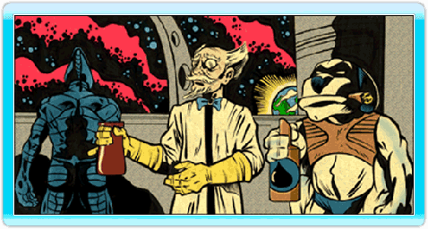

6 |
Historia |
 |

Kurt Hectic nunca quiso ser un héroe. Estaba satisfecho llevando una vida normal, y quería terminar sus años en un anonimato digno y silencioso. Pero no era ése su destino. Kurt era un empleado leal, y trabajar para el excéntrico Doctor Fluke Hawkins, todo un genio, a veces significaba hacer cosas extraordinarias. Casi sin creérselo, Kurt fue al cabo del tiempo requerido para abandonar su amada Tierra, teniendo el dudoso honor de ser el primer ayudante y encargado de la limpieza en el espacio. El Doctor Hawkins había sufrido durante mucho tiempo las burlas de sus colegas científicos, quienes decían que era demasiado excéntrico y que sus métodos, cuando menos, eran cuestionables. Con el tiempo, Hawkins se cansó de oír tales cosas, y buscando un sitio donde trabajar sin ser molestado, huyó de la Tierra en un exilio voluntario. Su nave, el "Jim Dandy", despegó sin hacer ruido, y Hawkins juró no volver nunca hasta obtener el reconocimiento de sus colegas. Las semanas se convirtieron en meses, y los meses se fueron convirtiendo lentamente en años. El mejor de los inventos del doctor en el exilio fue el Max, el perro de seis patas, que fue el primer éxito del Dr. Hawkins en la creación de inteligencia artificial. "Éxito" significa que Max nunca intentó matar al buen doctor y que tampoco albergaba planes para dominar el mundo. El ayudante perfecto, Max, mantenía al doctor con los pies en la tierra, y realizaba la misma función que el seguro de un fusil de asalto. Siempre tenía ganas de agradar y se adaptaba fácilmente a cualquier tarea. Su personalidad mantenía un extraño equilibrio entre la amabilidad y la afición por las armas de fuego. El doctor Hawkins tuvo la ocasión de demostrar que era un genio antes de que nadie se lo esperase. De repente, de una extraña dimensión aparecieron unas criaturas que atacaron la Tierra, montando en "corrientes de energía" hasta llegar a la superficie y despojándola de toda riqueza mineral. Aterrizaron en enormes máquinas llamadas "minadores oruga" que destruían todo lo que se interponía en su camino, sembrando el caos en ciudades enteras. Las fuerzas terrícolas estaban indefensas ante tal ataque. Al ver la devastación de la Tierra, la tripulación del "Jim Dandy" supo que tenía que actuar. Kurt fue equipado con la más radical de las invenciones del doctor: el inédito "traje de anillos", un atuendo blindado, y un rifle de francotirador con el que podría eliminar a objetivos situados a un kilómetro y medio. La tarea de Kurt consistía en saltar desde la nave en un poco convencional paracaídas de goma para abrirse paso hasta el piloto de cada minador oruga, con la esperanza de desactivar aquellas máquinas. Kurt estaba poco dispuesto por la labor, pero tenía poca opción. Era la última esperanza de la Tierra. Kurt combatió valientemente las defensas alienígenas, llegando al corazón mismo de cada minador y venciendo a piloto tras piloto con una convicción desesperada. Finalmente, se enfrentó a la malvada mente que se hallaba detrás del ataque, una sádica y grotesca criatura llamada Gunter Glut. Con la ayuda de Max y los inventos del doctor, Kurt luchó directamente con esta bestia diabólica, saliendo a la larga victorioso del envite. La invasión se vino abajo y los alienígenas se retiraron con el rabo entre las piernas, dejando a la Tierra destrozada, saqueada y arruinada, pero no vencida. No, no vencida. Ahora, con los alienígenas lejos y el orden restablecido, nuestros héroes pueden volver a su vida normal y cotidiana... ¿O no? Sólo el tiempo lo dirá.  |
 |
 |
 |